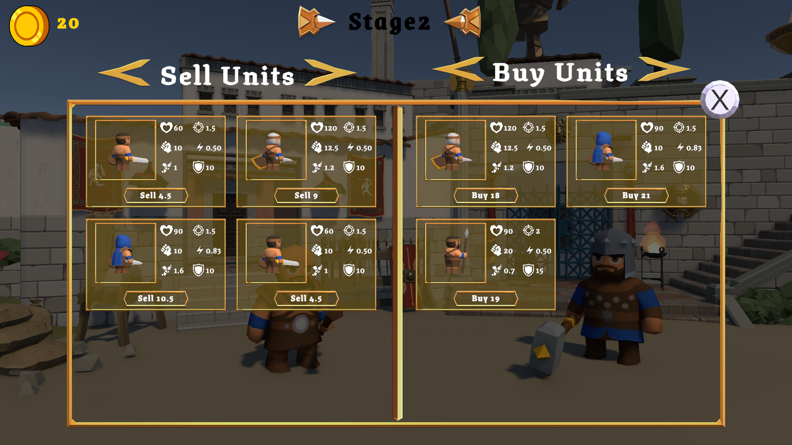
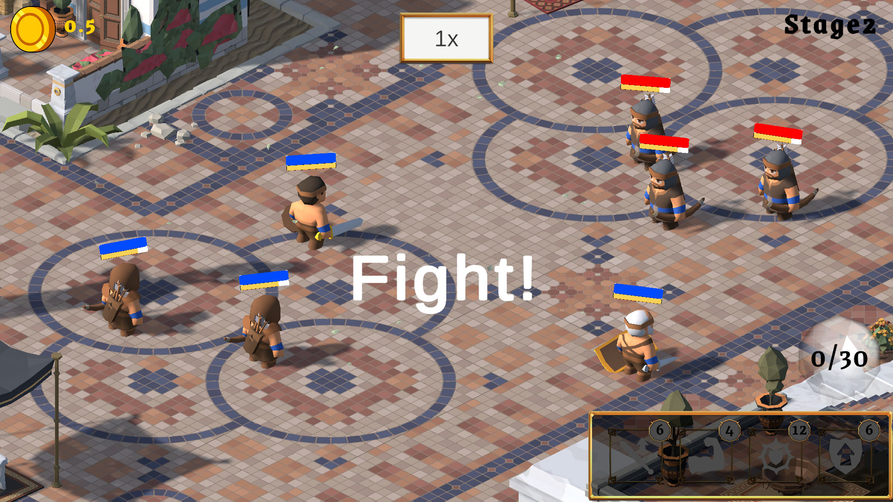
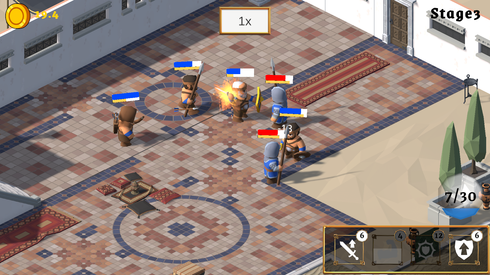
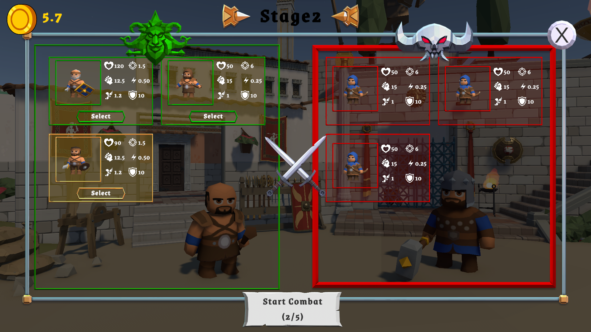
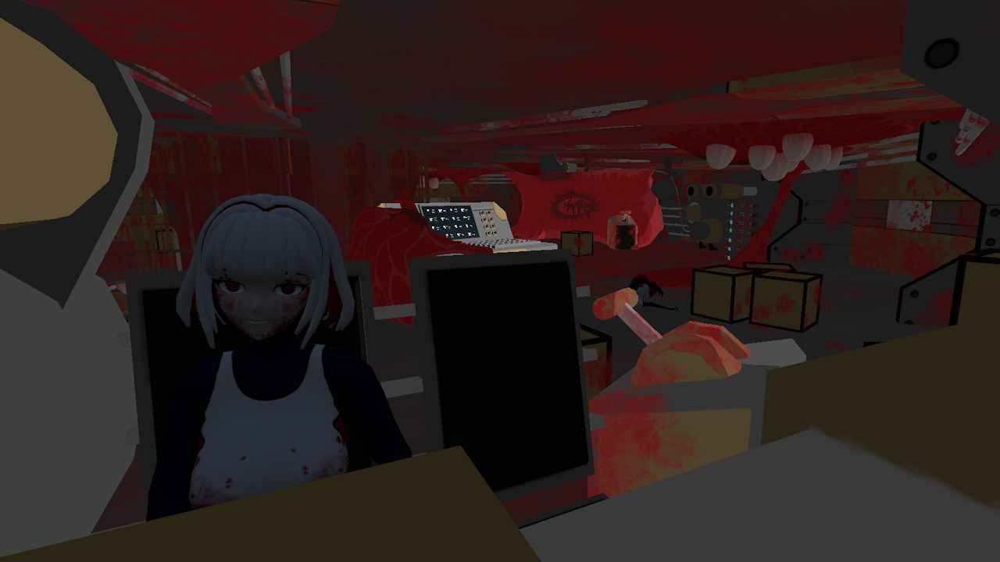
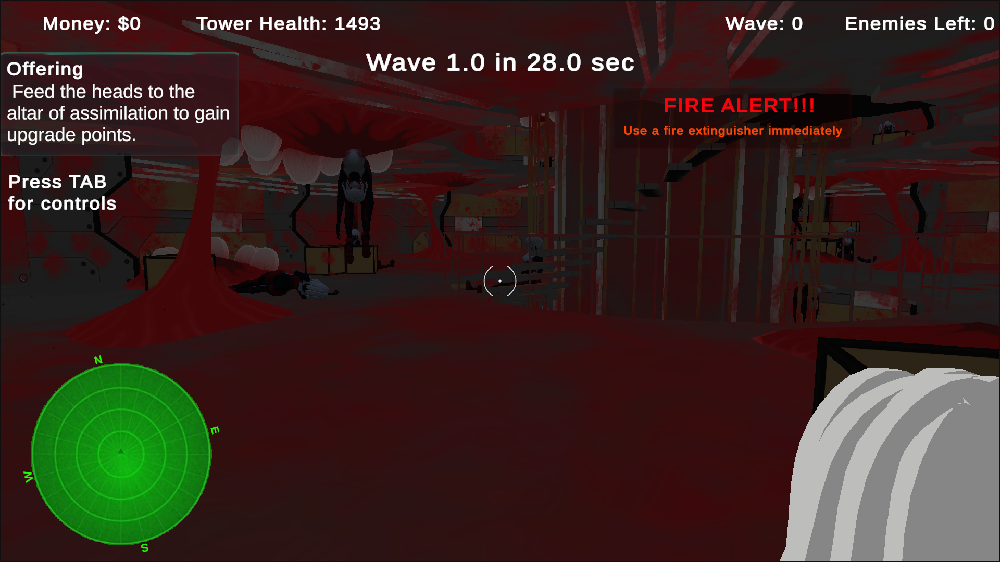
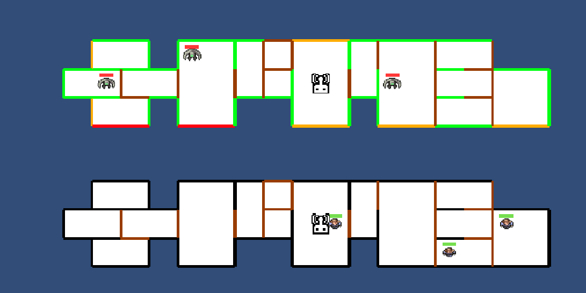
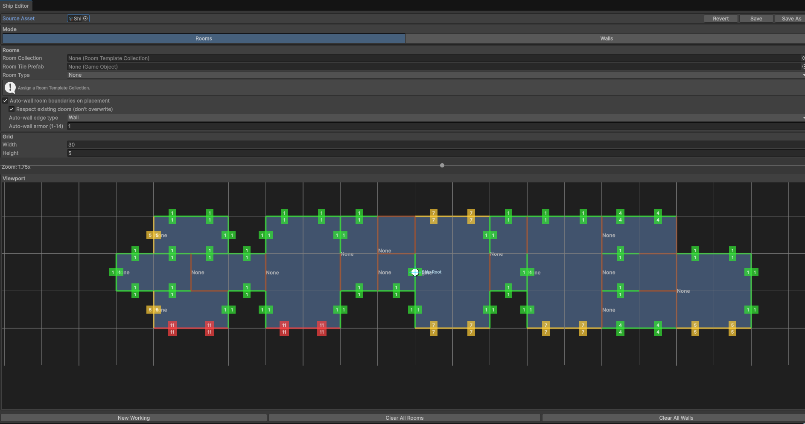
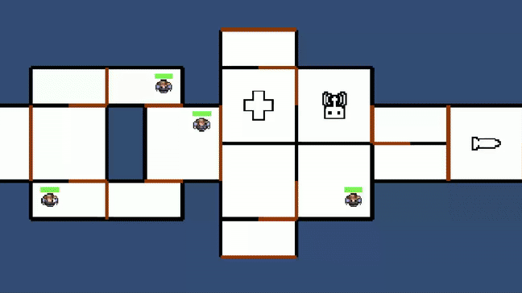
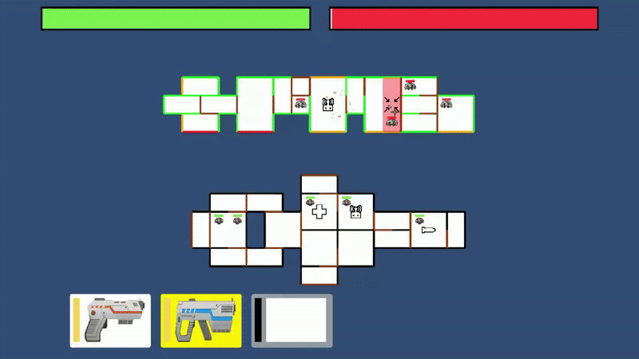

Gunslinger is a Roguelike, turn-based card game inspired by Slay the Spire. It was developed in a month as the final project for the Google Game and Application Academy by a two-person team — me as the programmer and an artist. The game combines deck-building and turn-based combat, offering strategic choices across procedurally generated stages.
Built a turn-based combat system where each card acts as an action or bullet type that fills the player’s magazine. At the end of the turn, all loaded bullets are fired based on the player’s choices and apply damage and effects of bullets to enemies. Also added an enemy intent system that lets players anticipate upcoming attacks.


Developed the card system with three card types: attack, effect, and buff. Implemented logic to allow players to customize their deck through combat rewards and item drops.
Programmed the combat manager to control enemy AI behavior, manage player turns, and handle the logic for firing bullets and applying effects. Also made a shop system where you can purchase random cards.
Designed a procedural map generation system to ensure varied gameplay in each run. The algorithm dynamically places nodes, representing different challenges and rewards.


Bellatorum is a 3D Gladiator AutoBattler where players build a team of gladiators and watch them fight automatically in tactical combat encounters. The project was developed in one month together with a game designer who handled the combat logic and design, while I was responsible for all programming and implementation..
Created a shop system where players can purchase gladiators using in-game currency. Each shop refresh offers a randomized set of units, allowing for varied strategies each round.
Implemented logic for unit purchasing, placement into the player’s roster, and upgrade mechanics when duplicates are bought, ensuring progression feels rewarding.

Developed the core auto-battle system where gladiators fight without direct player control. Each unit executes attacks and abilities automatically according to their AI and targeting logic.
Implemented different targeting strategies (e.g., nearest enemy, lowest health, random target), making battles unpredictable and encouraging players to plan team compositions carefully.


Worked with 3D gladiator prefabs, animations, and ability triggers to bring the units to life in combat. Each gladiator has stats such as health, damage, and attack speed that scale with upgrades.
Designed a combat manager to oversee turn flow, damage calculation, win/loss conditions, and smooth transitions between shop and battle phases. I gave my designer tools to create different gladiator units.

As part of a 6-person team for the GMTK Game Jam, we developed a game based on the theme "Built to Scale." The goal of the game was to creatively incorporate scaling mechanics as part of the core gameplay experience. I took on the role of a gameplay programmer, where my primary contribution was designing and implementing a shrink gun mechanic. This mechanic allowed players to shrink objects within the game world, adding both puzzle-solving elements and interactive gameplay based on size manipulation.
My primary responsibility was designing and implementing the shrink gun mechanic, which allowed players to shrink objects in the environment. This added a layer of interactive gameplay, allowing players to solve puzzles by resizing objects.
Additionally, I designed a damage system that calculated damage to enemies based on both the scale and velocity of the objects thrown at them. This system added a physics-based combat element, rewarding players for their skill in managing object size and throwing speed to deal more damage.


As part of a 6-person team for the GMTK Game Jam, we developed a game based on the theme "Built to Scale." The goal of the game was to creatively incorporate scaling mechanics as part of the core gameplay experience. I took on the role of a gameplay programmer, where my primary contribution was designing and implementing a shrink gun mechanic. This mechanic allowed players to shrink objects within the game world, adding both puzzle-solving elements and interactive gameplay based on size manipulation.
My primary responsibility was designing and implementing the shrink gun mechanic, which allowed players to shrink objects in the environment. This added a layer of interactive gameplay, allowing players to solve puzzles by resizing objects.
Additionally, I designed a damage system that calculated damage to enemies based on both the scale and velocity of the objects thrown at them. This system added a physics-based combat element, rewarding players for their skill in managing object size and throwing speed to deal more damage.


In this one-week project, I developed a game inspired by Angry Birds, but with a twist—bringing the concept into a 3D space. The core gameplay involves throwing various types of rockets that explode on impact, across 8 distinct levels. The objective is to gain 3 stars and score points based on your performance in each round.
In this game, I implemented three different colored tower pieces, similar to Angry Birds, which players can destroy using various rockets. These towers add a puzzle-like element to the levels, challenging players to find the best angles and rockets to topple them efficiently. Additionally, I designed two distinct enemy types, each with varying HP values, requiring players to adjust their tactics and make strategic choices.


For Godot Wild Jam, I developed a survival game where players take control of a ship under constant enemy attack. The core gameplay revolves around managing the ship's power system, as the player must quickly allocate power to different parts of the ship to fend off incoming threats. With three distinct control panels on the ship, players must strategically decide which systems—such as weapons, shields, or engines—get the most power to survive the onslaught.
I implemented glowy particles, bloom effects, and enemy attack animations to enhance visual feedback and immersion in the game. These effects supported the core survival mechanics, where players manage power distribution to different ship systems to defend against enemy attacks.


As part of a one-day project for my physics class, I developed a Galton board simulation in Unity. This project aimed to demonstrate the principles of probability and physics, visualizing how small variations can lead to a normal distribution as balls bounce through a grid of pegs.
The simulation features 2000 balls that fall into the board, effectively demonstrating the concept of probability. As the balls navigate through the pegs, their paths illustrate how random processes can result in a predictable distribution.

I contributed to the development of Keyboard Tennis for 4 months while i was working at PolygonSoft, a keyboard-based tennis game published on Steam by PolygonSoft Games. The game provides both fun and competitive experiences, challenging players to return the ball to their opponents with speed and precision.
I developed various mini-game implementations, including a word game and a score leaderboard, while also implementing a multiplayer mode for real-time competition. Additionally, I designed a power-up system to add variety and strategic depth to the gameplay. For the ball mechanics, I focused on throwing balls into the enemy's keyboard with trail effects, and I created a dynamic camera system that follows the action, ensuring a clear view of both the ball and players. The game also features language support for different keyboard layouts.


For Gunslinger, I implemented the core systems such as the turn-based combat manager, card handling, and procedural map generator. These systems were designed to be modular and reusable for future projects.
Implemented custom tool in editor for designers to create ships with dynamic armoured walls and rooms type/sizes and load to runtime.


Made crewmate units with different stats like move speed, dmg, hp and added pathfinding with A* in rendered ships

Created a realtime ship combat system with different weapon types, projectiles, enemy AI and damage system to different rooms and enemies, projectiles have different pen values and respect different armor layers .
